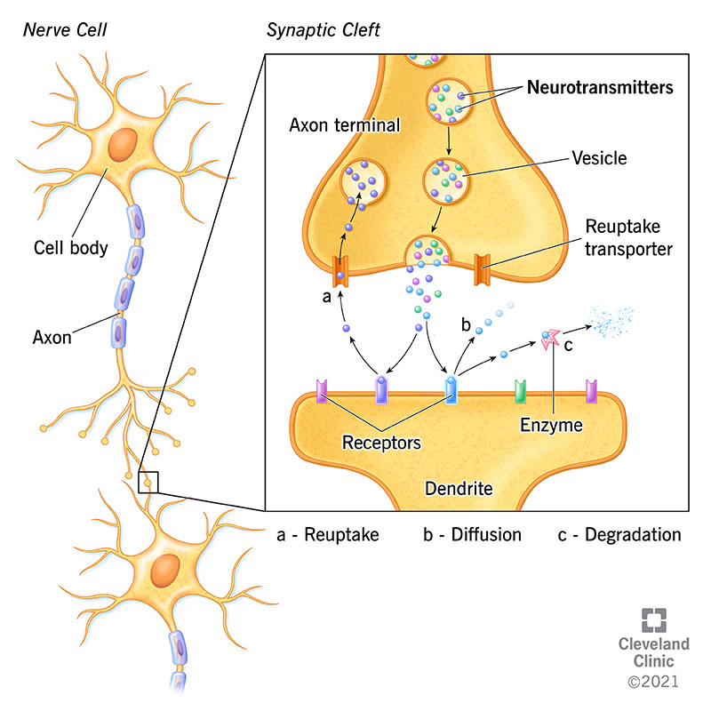
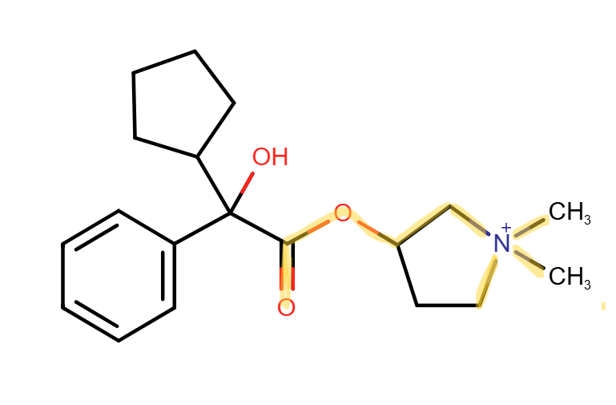
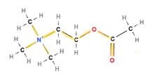

Cerebral Palsy is a neurological disorder and has many symptoms. My sister's CP symptoms include drooling because she has very little control of her mouth and throat. Glycopyrrolate is a medicine that helps her drool less. It does so by blocking the acetylcholine neurotransmitter.
This is additional info on what neurotransmitters are.
Acetylcholine is a neurotransmitter with unique functions and roles in the central nervous system. It is an excitatory neurotransmitter. It interacts with two types of receptors: nicotinic receptors and muscarinic receptors.
When acetylcholine binds to nicotinic receptors, it allows skeletal muscles to contract and it causes the release of adrenaline. When acetylcholine binds to muscarinic receptors, it regulates heart contractions and blood pressure, decreases heart rate, moves food through the intestine, and causes glands to secrete substances like tears, saliva, milk, sweat, and digestive juices.
We'll focus on muscarinic receptors because when acetylcholine binds to muscarinic receptors, it affects glands and their saliva secretions.
Acetylcholine molecular structure consists of a choline group (CH 3)3NCH2CH2OH and an acetyl group -COCH3. Choline is a quaternary ammonium cation, meaning it is a nitrogen molecule connected to four different hydrogen compounds. This nitrogen is connected to three methyl groups (-CH3) and a carbon-hydrogen compound. The choline structure is the key structure that binds to the muscarinic receptor.
Glycopyrrolate is an anticholinergic medicine. This medicine is used to reduce secretions in the respiratory tract and salivary glands. It blocks the action of acetylcholine by binding to the muscarinic receptors. Doing so decreases saliva production.
Glycopyrrolate consists of a benzene ring, a quaternary ammonium group, and other bulky side chains.
The quaternary ammonium group structure of glycopyrrolate binds to the muscarinic receptor, and the bulky side chains help the compound bind to the receptor and block acetylcholine from binding to the muscarinic receptor. Glycopyrrolate has a similar enough structure to bind to the receptor without activating its messenger.
 Highlighted are the portions of each structure that are similar; the quanternary ammonium structure connected to two CH2s, and -OCO.